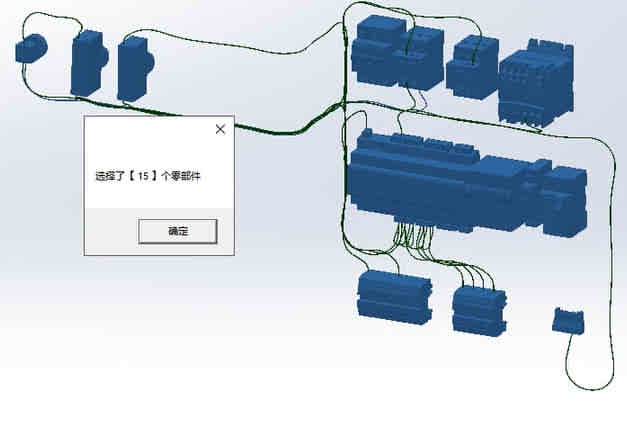

Sw_统计选择数量（V1.0）
实现在装配体选择部分零件进行数量的统计功能
目的
为什么会有这个需求呢：是因为有小伙伴需要统计一部分类型零件的数量
（如果是导出材料明细表然后再 Excel 统计就比较麻烦）

代码
1
2
3
4
5
6
7
8
9
10
11
12
13
14
15
16
17
18
19
20
|
public static void GetSelectedMember()
{
if (swDoc != null)
{
SelectionMgr swSelMgr = swDoc.SelectionManager;
Frame swFrame = swApp.Frame();
swFrame.SetStatusBarText(\"选择了 \" +
swSelMgr.GetSelectedObjectCount2(-1) + \" 个零部件\");
}
else
{
MessageBox.Show(\"请打开装配体\");
}
}
|
使用
1、【右键工具栏-自定义-宏-自定义宏命令】拖放到工具栏，并添加宏程序文件。（具体操作可参考往期内容《Sw_CSharp 宏程序-A》）
2、打开装配体并选择零件，我这里是选择了电箱的标准件，并对标准件数量进行统计
3、点击该命令，弹窗显示零件数量。